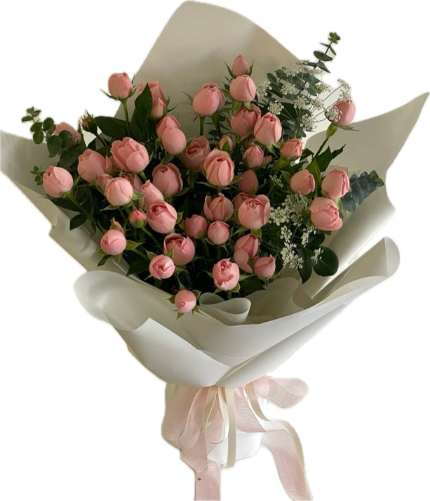

💐 꽃편지
꽃을 고르고, 마음을 적어 연인에게 보내요.

하루에 한 송이, 마음 한 다발
매일매일 꽃다발과 마음을 전할 수 있으면 좋겠다는 바람에서 시작됐습니다.
꽃을 고르고, 꽃말에 마음을 담아 편지를 쓰고, 사진도 함께 넣어 연인에게 보내 보세요. 특별한 날이 아니어도 괜찮아요. 오늘 하루를 꽃 한 다발로 건네봐요.
꽃을 고르고, 마음을 적어 연인에게 보내요.

매일매일 꽃다발과 마음을 전할 수 있으면 좋겠다는 바람에서 시작됐습니다.
꽃을 고르고, 꽃말에 마음을 담아 편지를 쓰고, 사진도 함께 넣어 연인에게 보내 보세요. 특별한 날이 아니어도 괜찮아요. 오늘 하루를 꽃 한 다발로 건네봐요.